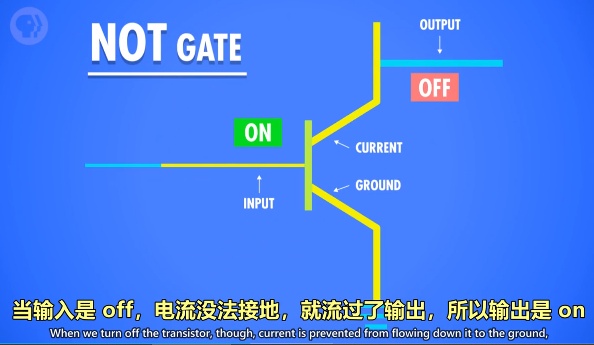
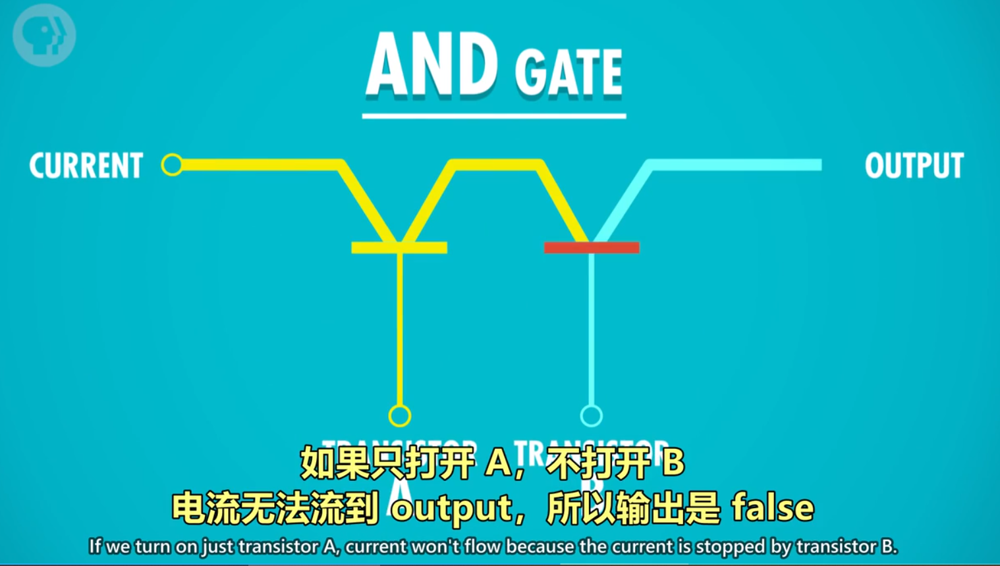

参考笔记：https://shimo.im/docs/vkCKkj3YxGtygrVg/read https://shimo.im/docs/PJAUY30F1uYksv0h/read
第 1 集：计算机早期历史
提到的设备：算盘 → 步进计算器 → 差分机 → 分析机 → 打孔卡片制表机 提到的人名：Charles Babbage, Ada Lovelace
02:27 最早的计算设备是算盘，举例如何使用 04:31 Computer 从指代职业变成指代机器 04:57 机器里有名的是：步进计算器。第一个可以做加减乘除的机器 06:44 炮弹为了精准，要计算弹道，二战是查表来做。但每次改设计了就需要做一张新表 07:30 Charles Babbage 提出了 差分机, 在构造差分机期间，想出了分析机, 分析机是通用计算机 08:50 Lovelace 给分析机写了假想程序，因此成为了第一位程序员 09:25 人口普查 10 年一次. Herman Hollerith 的打孔卡片制表机大大提升了效率
0、课程目标：
从高层次总览一系列计算机话题，快速入门计算机科学。
1、计算机技术的影响——进入信息时代
- 出现自动化农业设备与医疗设备
- 全球通信和全球教育机会变得普遍
- 出现意想不到的虚拟现实/无人驾驶/人工智能等新领域
2、计算机的实质：
极其简单的组件，通过一层层的抽象，来做出复杂的操作。
计算机中的很多东西，底层其实都很简单，让人难以理解的，是一层层精妙的抽象。像一个越来越小的俄罗斯套娃。
3、关于计算的历史：
- 公元前2500年，算盘出现，为十进制，功能类似一个计数器。
- 公元前2500年-公元1500年：星盘、计算尺等依靠机械运动的计算设备出现
- 公元1613年：computer的概念出现，当时指的是专门做计算的职业，
- 1694年：步进计算器出现，是世界上第一台能自动完成加减乘除的计算器。
- 1694-1900年：计算表兴起，类似于字典，可用于查找各种庞大的计算值。
- 1823年：差分机的设想出现，可以做函数计算，但计划最后失败。
- 19世纪中期：分析机的设想出现，设想存在可计算一切的通用计算机。
- 1890年：打孔卡片制表机。原理：在纸上打孔→孔穿过针→针泡入汞→电路连通→齿轮使计数+1。
第 2 集：电子计算机
提到的设备：继电器 → 真空管 → 晶体管
00:17 20世纪的发展要求更强的计算能力。柜子大小的计算机发展到房间大小
01:06 哈佛 Mark 1 号，IBM 1944 年做的
02:25 继电器，继电器一秒最多 50 次开关
03:24 继电器出 bug
03:49 1904 年，热电子管出现，第一个真空管。改进后变成和继电器的功能一样
05:34 "巨人1号" 计算机在英国 布莱切利园 首次大规模使用真空管。但编程麻烦，还要配置
06:40 1946 年，宾夕法尼亚大学的 ENIAC 是第一个通用可编程计算机
07:36 1947 年，贝尔实验室做出了晶体管，晶体管有诸多好处，IBM 很快全面转向晶体管
09:27 硅谷的典故：很多晶体管和半导体的开发都是这里做的。而生产半导体最常见的材料是硅
09:41 肖克利半导体 → 仙童半导体 → 英特尔
1、电子计算机元器件变化：
继电器→真空管→晶体管
2、计算机的出现背景：
20世纪人口暴增，科学与工程进步迅速，航天计划成形。以上导致数据的复杂度急剧上升、计算量暴增，对于计算的自动化、高速有迫切的需求。
3、电子计算机的发展：
1945年 哈佛马克1：使用继电器，用电磁效应，控制机械开关，缺点为有磨损和延迟。 *最早还因为有虫子飞进去导致故障，引申出bug=故障的意思。
1943年 巨人1号：使用真空管（三极管），制造出世界上第一个可编程的计算机。
1946年 ENIAC：第一个电子数值积分计算机，为第一台通用计算机。
1947年 晶体管出现，使用的是固态的半导体材料，相对真空管更可靠。
1950s 空军ANFSQ-7： 真空管到达计算极限。
1957年 IBM 608： 第一个消费者可购买的晶体管计算机出现。
第 3 集：布尔逻辑和逻辑门
01:00 什么是二进制, 为什么用二进制, 布尔逻辑
02:46 3个基本操作：NOT，AND，OR
02:51 解释3个基本操作
07:11 XOR 异或
1、计算机为什么使用二进制：
- 计算机的元器件晶体管只有2种状态，通电（1）&断电（0），用二进制可直接根据元器件的状态来设计计算机。
- 而且，数学中的“布尔代数”分支，可以用True和False（可用1代表True，0代表False）进行逻辑运算，代替实数进行计算。
- 计算的状态越多，信号越容易混淆，影响计算。对于当时每秒运算百万次以上的晶体管，信号混淆是特别让人头疼的的。
2、布尔代数&布尔代数在计算机中的实现
- 变量：没有常数，仅True和False这两个变量。
- 三个基本操作：
- NOT/AND/OR。
1）NOT操作：
命名：称为NOT门/非门。
作用：将输入布尔值反转。输入的True或False，输出为False或True。
晶体管的实现方式： - 半导体通电True，则线路接地，无输出电流，为False。 - 半导体不通电False，则输出电流从右边输出，为True。

2）AND操作
命名：AND门/与门
作用：由2个输入控制输出，仅当2个输入input1和input2都为True时，输出才为True，2个输入的其余情况，输出均为False。*可以理解为，2句话（输入）完全没有假的，整件事（输出）才是真的。
用晶体管实现的方式： 串联两个晶体管，仅当2个晶体管都通电，输出才有电流（True）

3）OR操作
命名：OR门/或门
作用：由2个输入控制输出，只要其中一个输入为True，则输出True。
用晶体管实现的方式： 使用2个晶体管，将它们并联到电路中，只要有一个晶体管通电，则输出有电流（True）。

3、特殊的逻辑运算——异或
命名：XOR门/异或门
作用：2个输入控制一个输出。当2个输入均为True时，输出False，其余情况与OR门相同。

图示： 先用一个OR门，将其与AND门并联，AND门与NOT门串联，最后让NOT与AND门并联，获得输出。

4、逻辑门的符号表示
作用：将逻辑门简化，将逻辑门用于构建更大的组件，而不至于太复杂。
图示： - 非门：用三角形+圆圈表示 - 与门：用D型图案表示 - 或门：用类似D向右弯曲的图案表示 - 异或门：用或门+一个圆弧表示

5、抽象的好处
使得分工明确，不同职业的工程师各司其职,而不用担心其他细节。
第 4 集：二进制
00:46 用十进制举例二进制的原理，演示二进制加法。存储单位 MB GB TB 等
05:30 正数，负数，整数，浮点数的表示
07:20 美国信息交换标准代码 - ASCII, 用来表示字符
09:00 UNICODE 1992 年诞生，是字符编码标准， 解决 ASCII 不够表达所有语言的问题
1、二进制的原理，存储单元 MB/GB/TB 解释
计算机中的二进制表示：
单个数字 1 或 0，1 位二进制数字命名为位(bit),也称 1 比特。
字节（byte）的概念： 1byte=8bit，即 1byte 代表 8 位数字。最早期的电脑为八位的，即以八位为单位处理数据。为了方便，将八位数字命名为 1 字节（1byte）.
十进制与二进制的区别： - 十进制有 10 个数字，0-9，逢 10 进 1（不存在 10 这个数字），则每向左进一位，数字大 10 倍。 - 二进制有 2 个数字，0-1，逢 2 进 1,（不存在 2 这个数字），则每向左进一位，数字大 2 倍。
如何进行二进制与十进制联系起来： - 将十进制与二进制的位数提取出来，编上单位： eg.二进制的 1011=12^0 + 12^1 + 02^2 + 12^3= 11（从右往左数） eg.十进制的 1045= 110^3 + 010^2 + 410^1 + 510^0
byte 在电脑中的单位换算： 1kb=2^10bit = 1024byte =1000b 1TB=1000GB 1GB=十亿字节=1000MB=10^6KB
32 位与 64 位电脑的区别： 32 位的最大数为 43 亿左右 32 位能表示的数字：0——2的32次方-1，一共2的32次方个数 64 位的最大数为 9.2*10^18
2、正数、负数、正数、浮点数的表示
1）计算机中表示数字的方法
整数： 表示方法: - 第 1 位：表示正负 1 是负，0 是正（补码） - 其余 31 位/63 位： 表示实数
浮点数（Floating Point Numbers）： 定义：小数点可在数字间浮动的数（非整数） 表示方法：IEEE 754 标准下 用类似科学计数法的方式，存储十进制数值 - 浮点数=有效位数指数 - 32 位数字中：第 1 位表示正负，第 2-9 位存指数。剩下 23 位存有效位数 eg.625.9=0.6259（有效位数）10^3（指数）
3、美国信息交换标准代码-ASCⅡ，用来表示字符
全称：美国信息交换标准代码
作用：用数字给英文字母及符号编号
内容：7 位代码，可存放 128 个不同的值。
4、UNICODE，统一所有字符编码的标准
诞生背景：1992 诞生，随着计算机在亚洲兴起，需要解决 ASCⅡ不够表达所有语言的问题。 为提高代码的互用性，而诞生的编码标准。
内容：UNICODE 为 17 组的 16 位数字，有超过 100 万个位置，可满足所有语言的字符需求。